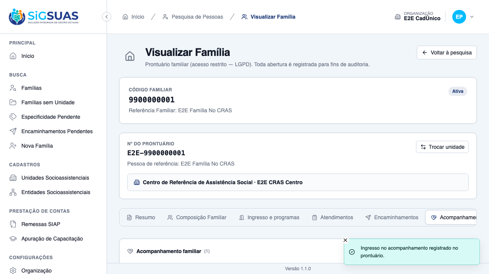
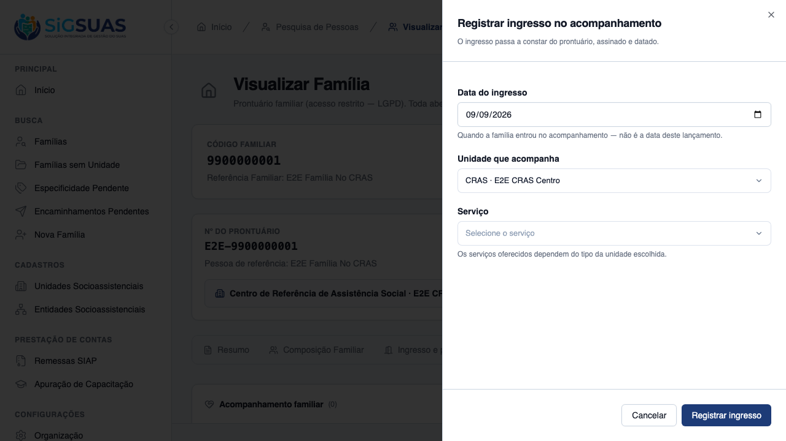
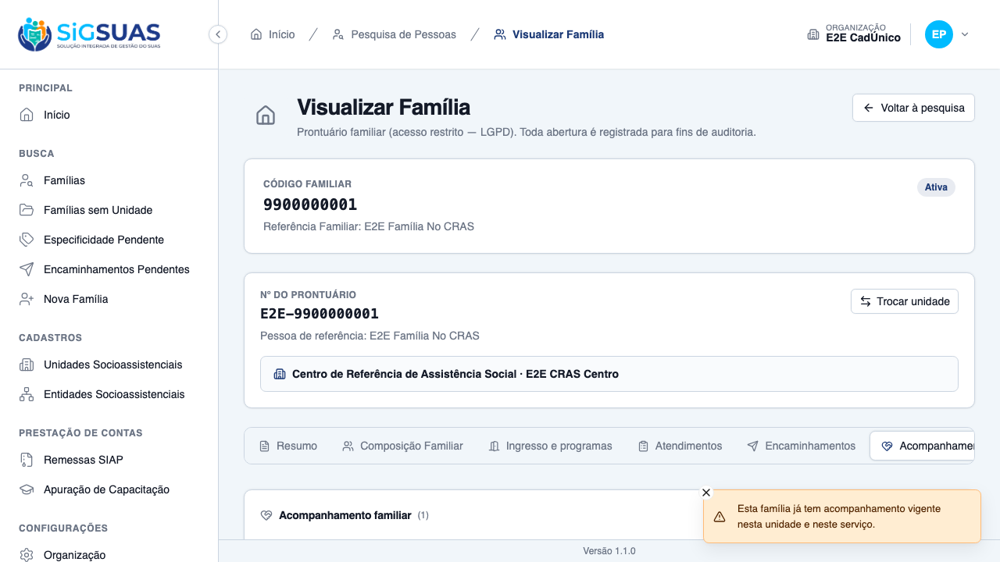
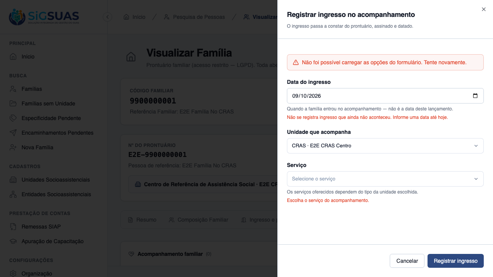
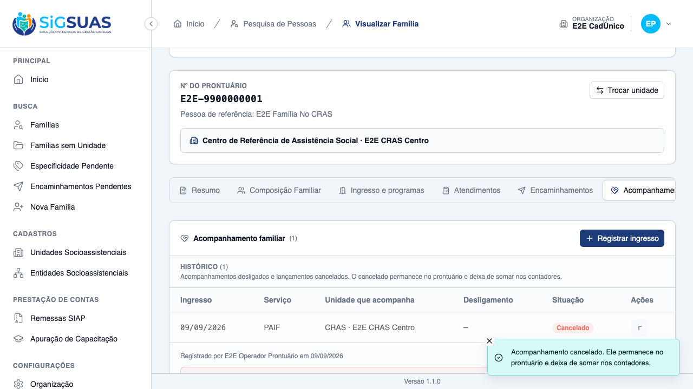
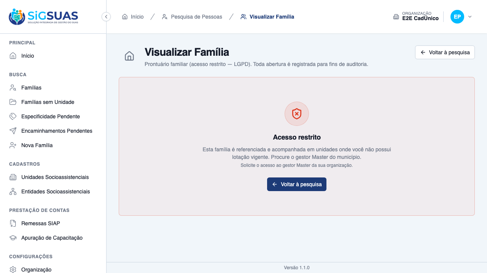
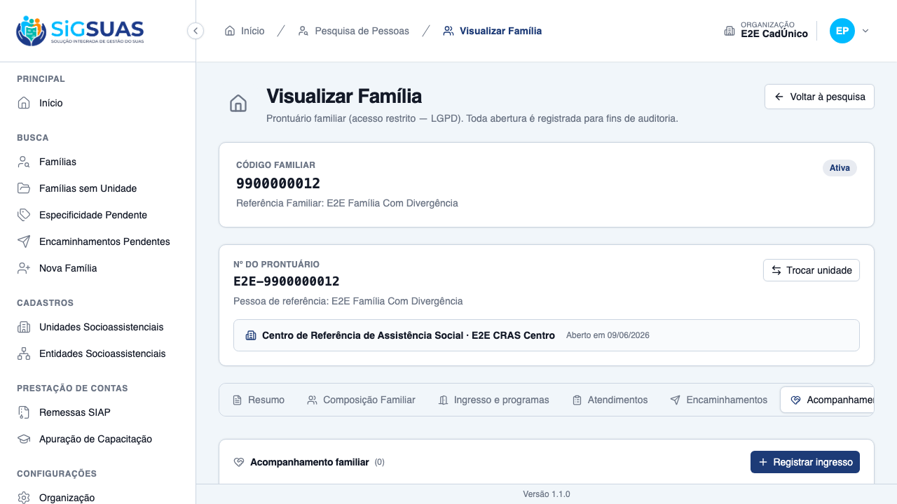

Relatório de Critérios de Aceite — US-ACOMP-02
Resumo
Onze critérios de aceite. Sete evidenciados no navegador (CA01, CA02, CA04, CA05, CA06, CA09 e CA10, com oito prints, incluindo um cenário de borda que a spec não numera) e quatro cobertos pela suíte automatizada (CA03, CA07, CA08 e CA11). A suíte Pest fecha com 117 testes e 660 asserções no filtro FollowUp, e os 12 cenários Playwright de e2e/tests/client/family-follow-up.spec.ts passam contra a mesma stack, em duas execuções consecutivas. Nenhum critério em falha. O E2E encontrou um defeito real de produto durante a verificação, já corrigido e coberto por regressão — ver as ressalvas.
| CA | Critério | Situação | Evidência |
|---|---|---|---|
| CA01 | Registrar ingresso no PAIF (happy path) | ATENDIDO | Print + Pest |
| CA02 | Serviço restrito pelo tipo de unidade | ATENDIDO | Print + Pest |
| CA03 | Acompanhamentos simultâneos em unidades diferentes | ATENDIDO (SUITE) | Pest (FollowUp) |
| CA04 | Dois vigentes na mesma unidade e serviço são recusados | ATENDIDO | Print + Pest |
| CA05 | Reingresso após desligamento | ATENDIDO | Print + Pest |
| CA06 | Data futura recusada | ATENDIDO | Print + Pest |
| CA07 | Retroativo em período já declarado | ATENDIDO (SUITE) | Pest (FollowUp) |
| CA08 | Unidade que não é CRAS nem CREAS | ATENDIDO (SUITE) | Pest (FollowUp) |
| CA09 | Cancelar ingresso lançado por engano | ATENDIDO | Print + Pest |
| CA10 | Negativa por unidade declara o motivo | ATENDIDO | Print + Playwright |
| CA11 | Isolamento entre municípios | ATENDIDO (SUITE) | Pest (TenantIsolation) |
| Extra | Cenário de borda além dos CA numerados | ATENDIDO | 1 print |
CA01 — Registrar ingresso no PAIF (happy path) ATENDIDO
Dado um profissional com lotação vigente no CRAS, quando registra o ingresso da família no PAIF com data de hoje, então o acompanhamento passa a constar como vigente no prontuário, assinado e datado.
- A linha entra na seção de vigentes com o serviço (PAIF) e a unidade que acompanha.
- A unidade gravada é a escolhida no formulário (snapshot), nunca a unidade de referência da família.
- Autoria e data do lançamento são carimbadas pelo servidor — o cliente não as envia.

CA02 — Serviço restrito pelo tipo de unidade ATENDIDO
Dado que a unidade escolhida é um CRAS, quando o profissional abre a lista de serviços, então só o PAIF é ofertado — o PAEFI não aparece.
- A restrição é lida de
follow_up_services.social_unit_type_id; não háifcom a sigla “CRAS”/“CREAS” no código. - Um serviço de outro tipo enviado à força é recusado pelo backend com 422.

CA03 — Acompanhamentos simultâneos em unidades diferentes ATENDIDO (SUITE)
Dado que a família já é acompanhada pelo CRAS no PAIF, quando o CREAS registra o PAEFI, então os dois acompanhamentos coexistem.
- Coberto por teste Feature: duas unidades acompanham a mesma família ao mesmo tempo, e a mesma unidade acompanha em dois serviços distintos.
- Não evidenciado no navegador porque exige um segundo profissional lotado no CREAS, que o seed E2E não possui.
Sem prova visual: critério verificado pela suíte automatizada (ver anexo).
CA04 — Dois vigentes na mesma unidade e serviço são recusados ATENDIDO
Dado um acompanhamento vigente no PAIF do CRAS Centro, quando se tenta registrar outro na mesma unidade e serviço, então a tela recusa e aponta o acompanhamento existente.
- A recusa é 409 com
error_code = follow_up_already_activeemeta.follow_up_uuidapontando o existente — a tela leva o profissional até a linha, em vez de dar erro cego. - Nada é duplicado: a família continua com exatamente um vigente.
- A última linha de defesa é o índice único parcial no banco, provado por teste de corrida com dois
storesimultâneos.

CA05 — Reingresso após desligamento ATENDIDO
Dado um acompanhamento desligado, quando a família ingressa de novo na mesma unidade e serviço, então a nova linha é aceita e a anterior permanece intacta.
- Critério destravado pela entrega da US-ACOMP-03: até então não havia como desligar pela interface, e este CA só tinha cobertura de suíte.
- Verificado na tela que o reingresso cria uma linha nova — o índice único parcial só barra dois VIGENTES.
- A linha desligada permanece intacta no histórico, com o estado preservado.

CA06 — Data futura recusada ATENDIDO
Dado o formulário de ingresso, quando o profissional informa uma data posterior a hoje, então o lançamento é barrado e nada é gravado.
- O bloqueio começa no próprio campo: o seletor de data traz
maxigual a hoje. - Forçada a data futura, a recusa é explicada na tela e o formulário permanece aberto.
- Nenhum acompanhamento vigente é criado.

CA07 — Retroativo em período já declarado ATENDIDO (SUITE)
Dado um mês cuja remessa SIAP já foi concluída, quando se registra um ingresso retroativo naquele mês, então o lançamento é salvo e vem acompanhado do aviso de necessidade de regeração.
- O aviso é
siap_remittance_regeneration_required, commeta.exerciseemeta.reference_month— é aviso, não bloqueio. - Coberto por teste Feature tanto no
storequanto nooptions(o profissional é avisado antes de salvar). - Não evidenciado no navegador: exige uma remessa concluída no mês do lançamento, estado que o seed E2E não monta.
Sem prova visual: critério verificado pela suíte automatizada (ver anexo).
CA08 — Unidade que não é CRAS nem CREAS ATENDIDO (SUITE)
Dado um Centro POP, cujo tipo não oferta serviço de acompanhamento, quando o profissional abre o formulário, então a ação não é oferecida e o motivo é declarado.
can_register: falsecomreason = unit_type_without_servicenooptions, e 422 com o mesmo código nostore.- Não evidenciado no navegador porque o Operacional do seed não tem lotação em Centro POP.
Sem prova visual: critério verificado pela suíte automatizada (ver anexo).
CA09 — Cancelar ingresso lançado por engano ATENDIDO
Dado um acompanhamento lançado por engano, quando o profissional o cancela informando o motivo, então a linha permanece no prontuário marcada como cancelada e some dos contadores.
- O motivo é obrigatório: confirmar sem preenchê-lo não cancela nada.
- Cancelar não apaga: a linha continua visível, com estado “cancelado”, autor e data.
- O
DELETEHTTP mapeia para cancelar — nenhuma rota acionadelete()ouforceDelete(), o que é provado por teste. - O motivo do cancelamento nunca entra no log de auditoria (D11).

CA10 — Negativa por unidade declara o motivo ATENDIDO
Dado um Operacional lotado apenas no “CRAS Centro” e uma família referenciada em outra unidade, que a sua não acompanha, quando ele tenta registrar o ingresso, então não é permitido e a tela informa o motivo, sem nomear a unidade que atende a família.
- A recusa chega ao profissional como motivo declarado, e não como erro cego.
- Nenhuma unidade é nomeada na negativa — é superfície de LGPD: dizer qual unidade atende a família já revelaria informação do prontuário a quem não tem acesso a ele.
- Verificado no navegador e fixado em regressão pelo cenário (f) de
family-follow-up.spec.ts, “Operacional sem acesso não vê o bloco, e a negativa não nomeia unidade”.

CA11 — Isolamento entre municípios ATENDIDO (SUITE)
Dado um usuário do município A, quando ele registra ou consulta acompanhamentos, então alcança somente famílias e unidades do município A.
- Família de outro município responde 404, nunca 403, em todas as rotas do acompanhamento: 403 confirmaria a existência do registro a quem não pode vê-lo.
- Nenhum acompanhamento de outro município vaza através de um identificador de família do meu próprio.
- O escopo é do Model, não só da rota: vale mesmo sem passar pela rota, pela trait de vínculo com a organização — defesa em profundidade, não um filtro só.
- Requisição que aponta para uma organização à qual o usuário não pertence é bloqueada.
- Sem prova visual por construção: o cenário exige dois municípios simultâneos, que a base do ambiente de verificação não encena. Coberto pelo bloco
FamilyFollowUpIsolationTestdo anexo automatizado.
Extra — Cenário de borda além dos CA numerados ATENDIDO
Comportamento que a spec descreve mas não numera como CA, e que vale prova visual por ser superfície de usabilidade.
- Estado vazio: família nunca acompanhada mostra orientação, não uma tabela vazia nem um erro.

Observações e ressalvas
Defeito de produto encontrado por este dossiê — corrigido
O cenário de cancelamento (CA09) falhou na primeira execução: o botão de cancelar não existia na tela. A causa era real e estava no backend — o contexto do leitor (follow_up_viewer) era carimbado apenas no FormRequest, mas a listagem devolve a collection e o Laravel só a serializa depois do controller, com o Request do container, que é outra instância. O viewer chegava nulo e can_edit/can_cancel saíam sempre false para quem não é Master.
Efeito no produto: o profissional com lotação vigente na unidade que acompanha não via os botões de corrigir e cancelar, apesar de as RN10 e RN11 lhe darem esse direito. Os caminhos de escrita não adoeciam, porque serializam na hora com o próprio FormRequest — por isso os testes de backend passavam e só o E2E pegou.
Corrigido em api@f29a9b6, com dois testes de regressão que foram verificados nos dois sentidos: falham sem a correção, passam com ela.
Limite de produto — questão aberta com o PO
Um Operacional do CREAS não consegue lançar o primeiro ingresso de uma família referenciada no CRAS: ele não tem acesso ao prontuário, e o eixo de acesso da US-ACOMP-04 só abre depois que o acompanhamento existe. O ciclo se fecha sobre si mesmo.
Verificado empiricamente durante a escrita dos testes: o POST responde 403. Nos testes, quem registra é o Master. A HU não diz quem faz esse primeiro lançamento — decisão pendente do PO. Está documentado no próprio teste, com o comentário de que trocar o ator reproduz o 403.
O que este dossiê não prova
Desligamento e reingresso pela tela— coberto desde a entrega da US-ACOMP-03: o CA05 passou a ter prova visual.- Aviso de remessa no navegador — exige remessa SIAP concluída, estado ausente do seed E2E.
- Centro POP sem serviço ofertado no navegador — o Operacional do seed não tem lotação nesse tipo de unidade.
- Convivência de duas unidades acompanhando pela tela — falta um segundo profissional lotado no CREAS no seed.
Todos os quatro estão cobertos pela suíte automatizada (anexo).
Nota de fuso descoberta na verificação
O banco E2E corre em UTC e o host em horário local. O cenário de data futura passava por acidente: “amanhã” no host caía no “hoje” do banco. Na virada do dia o teste expôs o comportamento real — com data futura o options não devolve unidade elegível, e o select fica vazio. O cenário foi reordenado para o fluxo real (escolher a unidade primeiro, errar a data depois) e passou a medir a recusa da data, não um select vazio.
Anexo I — Cobertura automatizada (Pest 4, --filter=FollowUp)
PASS Tests\Unit\FamilyFollowUpInvariantTest ✓ it accepts the THREE legal state combinations (D03) 0.44s ✓ it REFUSES an active row carrying discharge or cancellation columns… 0.03s ✓ it REFUSES an active row carrying discharge or cancellation columns… 0.03s ✓ it REFUSES an active row carrying discharge or cancellation columns… 0.03s ✓ it REFUSES an active row carrying discharge or cancellation columns… 0.04s ✓ it REFUSES a discharged row without date, without reason or carryin… 0.03s ✓ it REFUSES a discharged row without date, without reason or carryin… 0.03s ✓ it REFUSES a discharged row without date, without reason or carryin… 0.03s ✓ it REFUSES a cancelled row without timestamp, without reason or car… 0.03s ✓ it REFUSES a cancelled row without timestamp, without reason or car… 0.03s ✓ it REFUSES a cancelled row without timestamp, without reason or car… 0.03s ✓ it REFUSES a cancelled row without timestamp, without reason or car… 0.03s ✓ it is enforced by the Actions before every save (D03) 0.04s ✓ it lets the PARTIAL UNIQUE INDEX refuse a second ACTIVE row for the… 0.03s ✓ it produces ONE row when two simultaneous stores hit the same unit+… 0.03s ✓ it lets the index accept a NEW active row when the previous one is… 0.03s ✓ it scopes the unique index BY TENANT — the same family code in anot… 0.03s ✓ it refuses a FUTURE effective date inside the Update action, with a… 0.04s ✓ it refuses to EDIT a non-active follow-up inside the Update action… 0.03s PASS Tests\Unit\FollowUpUsageServiceTest ✓ it nasce sem consumidores declarados nos dois servicos (a US-ACOMP-… 0.02s ✓ it sem consumidores, nenhum servico esta em uso — a recusa sai como… 0.01s ✓ it sem consumidores, nenhuma razao esta em uso — a recusa sai como… 0.01s ✓ it reconhece o servico referenciado por um consumidor registrado 0.01s ✓ it reconhece a razao referenciada por um consumidor registrado 0.01s ✓ it ignora consumidor cuja tabela ainda nao existe, sem estourar 0.01s ✓ it devolve lista vazia quando nenhum uuid e informado 0.01s PASS Tests\Feature\Client\FamilyAccessFollowUpAxisTest ✓ it opens the record for a unit that FOLLOWS the family, auditing vi… 0.08s ✓ it reaches the WHOLE record, not just the follow-up block, includin… 0.08s ✓ it keeps the access after the follow-up is DISCHARGED (CA03/RN02) 0.05s ✓ it does NOT grant access through a CANCELLED follow-up, denying wit… 0.05s ✓ it does NOT grant access through a soft-deleted follow-up (RN02/D05… 0.05s ✓ it denies the unit with NEITHER reference NOR follow-up, stating bo… 0.06s ✓ it does not let the follow-up replace the LGPD add-on (CA06/RN03) 0.05s ✓ it does not let the follow-up replace an ACTIVE unit assignment (CA… 0.05s ✓ it keeps the Master accessing by bypass, never by the follow-up axi… 0.05s ✓ it audits the FOUR distinct access axes (CA01/CA03/CA08/RN04) 0.07s ✓ it does not let following ONE family authorize reaching another one… 0.05s ✓ it keeps the organization isolation ahead of the follow-up axis (CA… 0.06s ✓ it lists the FOLLOWED family in the person search and opens it from… 0.06s ✓ it filters the follow-up axis by tenant_id, even with a numerically… 0.07s ✓ it reports the assigned units that follow the family in the decisio… 0.05s PASS Tests\Feature\Client\FamilyFollowUpTest ✓ it registers the family admission into PAIF, signed and dated (CA01… 0.06s ✓ it IGNORES authorship and state columns sent by the client (RN13/§7… 0.06s ✓ it offers ONLY the service of the unit TYPE and refuses the other o… 0.05s ✓ it lets two units follow the SAME family at the same time (CA03/RN0… 0.06s ✓ it lets the SAME unit follow the family in two DIFFERENT services (… 0.06s ✓ it refuses a SECOND active follow-up in the same unit and service,… 0.06s ✓ it accepts a NEW admission after a discharge, keeping the previous… 0.07s ✓ it refuses a FUTURE admission date on store — 422 WITHOUT error_cod… 0.05s ✓ it accepts TODAY at 23h in the app timezone — the boundary never re… 0.05s ✓ it saves a retroactive admission in a remitted month AND returns th… 0.05s ✓ it does NOT warn when the month remittance is pending or failed (CA… 0.05s ✓ it warns BEFORE the submit, in the options of a remitted month (CA0… 0.05s ✓ it blocks the registration in a unit type that offers NO service (C… 0.06s ✓ it reports family_without_unit BEFORE any other reason (RN08) 0.06s ✓ it refuses a unit where the operator has NO assignment on the admis… 0.05s ✓ it evaluates the assignment ON THE ADMISSION DATE, not today (RN02/… 0.06s ✓ it CANCELS the admission with a reason and KEEPS the row in the rec… 0.07s ✓ it frees the unit+service pair after the cancellation (RN05/RN11) 0.06s ✓ it answers 409 when cancelling an ALREADY cancelled follow-up — ide… 0.06s ✓ it refuses to CANCEL a DISCHARGED follow-up — that is corrected by… 0.04s ✓ it requires a reason to cancel (RN11) 0.07s ✓ it NEVER logs the cancel_reason in the activity trail (D11) 0.05s ✓ it denies the WHOLE follow-up surface for a family of ANOTHER unit,… 0.07s ✓ it does not let FOLLOWING one family authorize opening a follow-up… 0.06s ✓ it EDITS an active follow-up, restamping updated_by (RN10/RN13) 0.06s ✓ it accepts the PATCH verb on the same action (§11) 0.06s ✓ it refuses to EDIT a cancelled or discharged follow-up (RN10) 0.05s ✓ it refuses a FUTURE date on update (RN07/RN10) 0.05s ✓ it revalidates RN05 on update, excluding the row being edited (RN10… 0.07s ✓ it returns TWO deduplicated warnings when the update crosses two re… 0.06s ✓ it keeps social_unit_id FROZEN when the family reference unit chang… 0.05s ✓ it hides cancel_reason and the action flags from a reader who canno… 0.07s ✓ it returns an EMPTY block for a family never followed, and filters… 0.06s ✓ it exposes can_edit/can_cancel on the LISTING, not only on the writ… 0.05s ✓ it shows the OTHER unit's line WITHOUT affordances, and its own WIT… 0.07s PASS Tests\Feature\Manager\FollowUpExitReasonTest ✓ it lista exatamente as quatro razoes com os codigos do instrumento,… 0.03s ✓ it nunca expoe o id no payload da razao 0.02s ✓ it marca a incoerencia com progresso significativo apenas na razao… 0.02s ✓ it nasce com requires_description inerte nas quatro razoes 0.02s ✓ it nao expoe rota de criacao de uma quinta razao 0.02s ✓ it colhe as sete abilities das rotas da razao e nao cria store 0.04s ✓ it nao oferece escrita da razao ao guard client, mas mantem a leitu… 0.03s ✓ it recusa a exclusao de razao sem uso com o motivo de vinculo ao in… 0.02s ✓ it recusa a exclusao da razao ja usada em um desligamento 0.02s ✓ it recusa a exclusao em massa de razoes item a item, sem excluir na… 0.02s ✓ it mantem a razao inativada na leitura e no historico, tirando-a so… 0.02s ✓ it atualiza a razao e audita a alteracao com autor, valor antigo e… 0.03s ✓ it recusa renumerar uma razao para um codigo ja ocupado 0.02s ✓ it bloqueia quem nao tem a permissao de escrita da razao 0.02s ✓ it nao tem tenant_id nem BelongsToTenant na razao 0.02s ✓ it roda o seeder de razoes duas vezes sem duplicar nem desfazer a e… 0.02s PASS Tests\Feature\Manager\FollowUpServiceTest ✓ it lista exatamente os dois servicos do bloco 24, com code e nome p… 0.02s ✓ it nunca expoe o id no payload do servico 0.02s ✓ it traz o tipo de unidade que oferta cada servico, resolvido por co… 0.02s ✓ it filtra os servicos ofertados por um tipo de unidade (predicado d… 0.02s ✓ it nao expoe rota de criacao de um terceiro servico 0.02s ✓ it colhe as sete abilities das rotas do servico e nao cria store 0.02s ✓ it nao oferece escrita ao guard client, mas mantem a leitura via sh… 0.03s ✓ it recusa a exclusao de servico sem uso com o motivo de vinculo ao… 0.02s ✓ it recusa a exclusao de servico em uso com o motivo de uso registra… 0.02s ✓ it recusa a exclusao em massa item a item, sem excluir nada 0.02s ✓ it atualiza o nome do servico sem tocar no code normativo 0.02s ✓ it recusa desvincular o servico do tipo de unidade (coluna NOT NULL… 0.03s ✓ it recusa dois servicos com o mesmo code 0.02s ✓ it inativa e reativa servicos em massa sem removê-los da leitura 0.02s ✓ it audita a troca do tipo de unidade com autor, valor antigo e novo 0.03s ✓ it bloqueia quem nao tem a permissao de escrita do servico 0.02s ✓ it da ao ADMIN as sete permissoes e ao ADMIN_OPERADOR apenas leitur… 0.87s ✓ it nao da a nenhum papel do guard client permissao de escrita dos d… 0.87s ✓ it nao tem tenant_id nem BelongsToTenant no servico 0.02s ✓ it roda o seeder de servicos duas vezes sem duplicar nem desfazer a… 0.02s PASS Tests\Feature\TenantIsolation\FamilyFollowUpIsolationTest ✓ it answers 404 — never 403 — for a family of ANOTHER tenant, on ALL… 0.07s ✓ it never leaks a follow-up of ANOTHER tenant through MY family uuid… 0.05s ✓ it answers 404 when the follow-up belongs to ANOTHER family of the… 0.06s ✓ it scopes the Model by tenant_id even without the route (BelongsToT… 0.05s ✓ it blocks the request when the X-Tenant-UUID points at a tenant the… 0.04s Tests: 117 passed (660 assertions) Duration: 7.20s
Anexo II — Cenários Playwright (project chromium-tenant)
[globalSetup] Rate-limiter cache do Laravel zerado. Running 20 tests using 2 workers ✓ 2 [setup] › tests/auth.setup.ts:10:6 › autentica super admin (UI) e propaga cookies para o api-client (1.3s) [tenant-auth.setup] sessão de tenant pronta em /Users/binho/Projetos/esuas-all/e2e/.auth/tenant.json ✓ 1 [setup] › tests/tenant-auth.setup.ts:82:6 › autentica usuário do tenant (client) e propaga cookies para o api-client (1.6s) ✓ 3 [chromium-tenant] › tests/client/family-follow-up.spec.ts:193:7 › US-ACOMP-02 — acompanhamento familiar no prontuário (client) › (g) família nunca acompanhada mostra o estado vazio do bloco (6.6s) ✓ 4 [chromium-tenant] › tests/client/family-follow-up.spec.ts:216:7 › US-ACOMP-02 — acompanhamento familiar no prontuário (client) › (b) num CRAS o select oferece só o PAIF — o PAEFI não é ofertado (7.9s) ✓ 5 [chromium-tenant] › tests/client/family-follow-up.spec.ts:234:7 › US-ACOMP-02 — acompanhamento familiar no prontuário (client) › (d) data futura é barrada no próprio formulário (8.0s) ✓ 6 [chromium-tenant] › tests/client/family-follow-up.spec.ts:262:7 › US-ACOMP-02 — acompanhamento familiar no prontuário (client) › (a) registra o ingresso no PAIF a partir de um CRAS (9.8s) ✓ 7 [chromium-tenant] › tests/client/family-follow-up.spec.ts:295:7 › US-ACOMP-02 — acompanhamento familiar no prontuário (client) › (c) segundo ingresso na mesma unidade e serviço é recusado, apontando o existente (9.4s) ✓ 8 [chromium-tenant] › tests/client/family-follow-up.spec.ts:323:7 › US-ACOMP-02 — acompanhamento familiar no prontuário (client) › (e) cancelar com motivo mantém a linha no prontuário, marcada (7.6s) ✓ 9 [chromium-tenant] › tests/client/family-follow-up.spec.ts:388:7 › US-ACOMP-02 — negativa de acesso ao bloco de acompanhamento (client) › (f) Operacional sem acesso não vê o bloco, e a negativa não nomeia unidade (6.4s) ✓ 10 [chromium-tenant] › tests/client/family-follow-up.spec.ts:511:7 › US-ACOMP-03 — desligamento e avaliação de resultados (client) › (c) os meses de acompanhamento são apresentados calculados e NÃO digitáveis (6.7s) ✓ 11 [chromium-tenant] › tests/client/family-follow-up.spec.ts:532:7 › US-ACOMP-03 — desligamento e avaliação de resultados (client) › (d) "não se aplica" vem sugerida quando não houve encaminhamento — e é alterável (7.5s) ✓ 12 [chromium-tenant] › tests/client/family-follow-up.spec.ts:562:7 › US-ACOMP-03 — desligamento e avaliação de resultados (client) › (b) concluir sem a avaliação é recusado, e o acompanhamento continua vigente (7.9s) ✓ 13 [chromium-tenant] › tests/client/family-follow-up.spec.ts:588:7 › US-ACOMP-03 — desligamento e avaliação de resultados (client) › (e) a combinação incoerente pede confirmação — e, confirmada, é salva como informada (9.8s) ✓ 14 [chromium-tenant] › tests/client/family-follow-up.spec.ts:636:7 › US-ACOMP-03 — desligamento e avaliação de resultados (client) › (a) o desligamento aparece no prontuário com a avaliação ao lado (6.4s) ✓ 15 [chromium-tenant] › tests/client/family-follow-up.spec.ts:659:7 › US-ACOMP-03 — desligamento e avaliação de resultados (client) › (f) a avaliação não tem ação de excluir nem de editar — e não há reabertura (6.5s) ✓ 16 [chromium-tenant] › tests/client/family-follow-up.spec.ts:680:7 › US-ACOMP-03 — desligamento e avaliação de resultados (client) › reingresso após desligamento é aceito, e a linha anterior permanece intacta (9.4s) ✓ 17 [chromium-tenant] › tests/client/family-follow-up.spec.ts:864:7 › US-ACOMP-04 — acesso ao prontuário pela unidade que acompanha (client) › (a) quando a minha unidade acompanha, o prontuário da família de outra unidade abre (5.9s) ✓ 18 [chromium-tenant] › tests/client/family-follow-up.spec.ts:875:7 › US-ACOMP-04 — acesso ao prontuário pela unidade que acompanha (client) › (b) o acesso é ao prontuário INTEIRO — composição, atendimentos e encaminhamentos (6.0s) ✓ 19 [chromium-tenant] › tests/client/family-follow-up.spec.ts:892:7 › US-ACOMP-04 — acesso ao prontuário pela unidade que acompanha (client) › (c) cancelado NÃO concede: o acesso fecha, e a negativa declara os dois eixos sem nomear unidade (12.9s) ✓ 20 [chromium-tenant] › tests/client/family-follow-up.spec.ts:940:7 › US-ACOMP-04 — acesso ao prontuário pela unidade que acompanha (client) › DESLIGADO mantém o acesso — só o cancelamento fecha (US-ACOMP-03 destrava este par) (18.0s) 20 passed (2.7m)